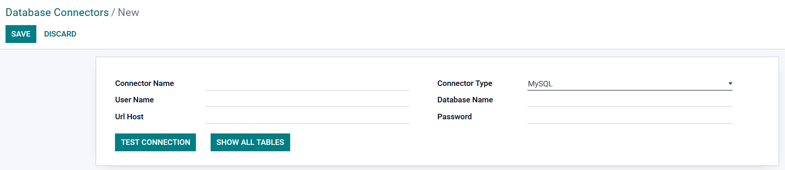
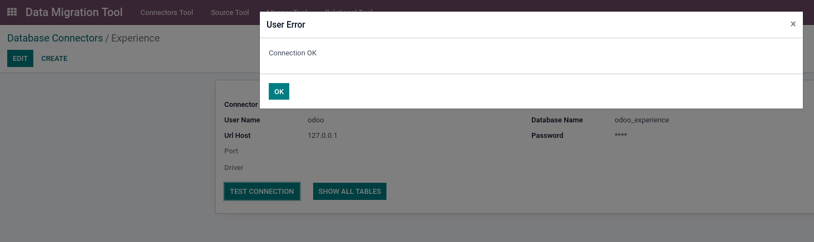
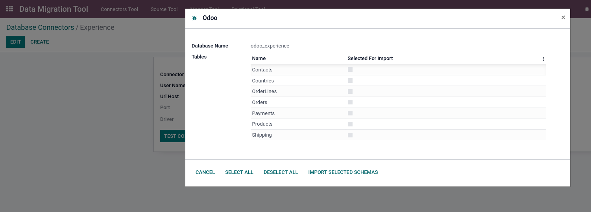
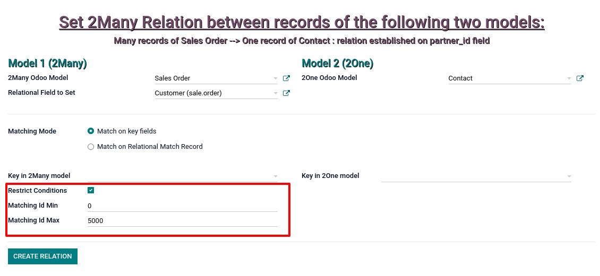
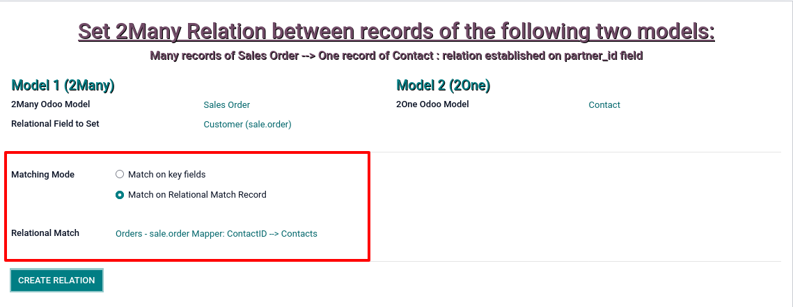

The Data Migration Tool was designed to to facilitate the import of data from other management software to OdooThe application is functionally composed of 4 tools which also represent the 4 sequential steps that must be performed to complete the data migration
The 4 tools, arranged from left to right on the main menu are: the Connector, the Source Table Schema object, the Mapper and finally the Relational Helper.
The creation of a Connector represents the starting point of the migration process.
A new connection record is created using the db.connector object form, which allows you to set the name of the connector, the type of DB you connect to (currently the only type implemented is MySQL), the URL, the name of the DB and the password.

Once all the required fields have been set, it is possible to check the validity of the connection to the source DB using the Test Connection button.

If all the parameters have been set correctly and the connection is valid, you can proceed to explore the contents of the source DB using the Show All Tables button which opens a wizard with the list of tables contained in the DB.

Using this wizard it is possible to select one or more source tables for the creation of records of the second fundamental element of the application: the Source Table Schema.
The records of the Source Table Schema object can be created, as we have just seen, from the Wizard opened with the Show all tables button on the connector form, or thanks to the second menu of the application, individually importing the tables that interest us using the import table schema menu item.
The Source Table Schema object shows the representation of the tables to be imported (column names, data types, etc.)
In the form of a Source Table Schema record there is a button that allows opening a wizard to move towards the next step, i.e. the mapping of the source table to a particular Odoo model.
The Wizard allows you to select the Odoo model to which you want to map the source table data; the Create Mapper button will open, in edit mode, the form of the third tool of the application, the Table Mapper.
The Mapper Tool is the most complex tool in the application and represents the heart of the migration process.
The Mapper is used to establish the correspondence between the columns of a source table and the fields of an Odoo model; once all the parameters are set, this tool will perform the actual migration by creating the selected Odoo model records based on the data imported from the source table.
The first parameter to set after the name is the mapping mode; the selection allows three values: Primitive on new records for creating new records, Primitive on existing records and Update existing records with fixed values for updating records.
The Source Table and Odoo Model to Map fields set the source table from which the data is migrated and the destination Odoo model; if the form is opened through the wizard activated by the Source Table tool, they will already be preset.
The next option allows you to apply filters to the source records; if the flag is active, you can select which records from the source table to migrate based on certain conditions.
The following setting allows you to establish the matches between the columns of the source table and the fields of the destination Odoo model.
The matchmaking form gives access to additional mapping settings; the Filling Mode, Source Table Column, Odoo Model Field and finally a series of fields to perform any checks, conversions or modifications on the values we are migrating.
The Filling Mode allows you to choose whether to map a single column of the source table onto a field of the destination Odoo model (standard mode), or whether to concatenate values from multiple columns onto a single field, in which case you can choose between various characters for concatenation.
Other possible values for the Filling Mode are Fixed Value, Get Odoo Sequence and Get Random id.
The Source Table Column field allows you to select the column (or columns, in the case of filling mode = multiple concatenated source column values) of the source table from which the values to be migrated are imported.
The Odoo Model Field establishes the destination field to which the migrated values will be saved.
Finally, there are some options to carry out Checks/Conversions or Modifications of the imported values: exclude duplicates, set a particular default value in case of null value, alter the original values based on certain settable conversions, force a cast in Integer or Float or force a fixed length of the target string value.
As we will see in the next section, relational data such as foreign keys can be imported as primitive data to be mapped onto custom fields created via code or via Odoo Studio and then used with the Relational Helper tool to populate the relational fields.
However, there is another way to save relational data: the Tracing Parameters section gives the possibility of saving any foreign keys on special tracer objects made available by the application, eliminating the need to create new custom fields for saving this data and therefore without the need to modify the destination Odoo model. This mode is still in testing.
Finally, the Record creation parameters section allows you to limit the number of records to import, to apply a possible offset and to choose the record creation mode: the standard mode calls the create method, the others use direct call on the database (faster) or creation via form (slower).
After setting all the fields, pressing the Import Data button will start the migration carried out by the mapper and therefore the creation or update of records (depending on the selected Mapping Mode) in the Odoo destination model. The operation may take a variable amount of time depending on numerous factors including the speed of the machine used, connection speed, creation mode, number of fields to map and, of course, number of source records to migrate.
Once the import operation is completed, a wizard will show a short report of the result (number of records created or updated).
As we have just seen, the third step performed with Table Mapper imports only raw data on numeric, string, Boolean or date Odoo fields: if an Odoo model contains only those kinds of fields, the migration process for this model can be considered effectively concluded.
The 4th tool of the application is instead necessary when we need to set relational fields, i.e. to establish relationships between records mapped to different Odoo models on the basis of primary keys and foreign keys present on the imported source tables.
Basically all relational fields will be set by means of this tool.
The Relational Helper object allows you to choose the two models to relate (in the example sale.order.line and product.product) and the Many2one field to set (in the example the Product field).
The following setting, the Matching Mode, allows you to select the way in which the records of the two models will be related; the first method is match on key fields and it works on the assumption that the primary key and the foreign key of the two models have been imported (thanks to the mapper) on custom fields ; the match of these keys will be used to create the relationship.
As in the Mapper tool, it is possible to limit the number of records on which to perform the operation; in this case you can set the minimum and maximum value of the keys to compare (this option is only available in the Match on key fields mode).

Alternatively, by choosing the Match on Relational match record mode it is possible to establish a relationship without using the keys saved in the custom fields; this mode is based on the tracking objects we talked about in the previous tool and is currently still in testing.

After setting all fields, pressing the Create report button will start the operation; at the end a wizard will show a short report with the results.
Right now, we are testing the tracer functionality which allows you to save relational data (primary and foreign keys) without the need to resort to the creation of custom fields.
Furthermore, the functionality of the Relational Helper tool will soon be extended to also enhance the Many2many fields.